În stînga este slide-ul din curs, în dreapta aceeași figură sau același tabel, calculat în browser din aceleași date. Butonul ▶ modifică parametrul pas cu pas; tabelele și exemplele lucrate se recalculează odată cu el. Abrevieri: VaR (value at risk, valoarea expusă la risc), ES (expected shortfall, pierderea așteptată în coadă), HS (historical simulation, simularea istorică), EVT (extreme value theory, teoria valorilor extreme), POT (peaks over threshold, metoda vîrfurilor peste prag), GPD (generalised Pareto distribution, distribuția Pareto generalizată), GARCH (generalised autoregressive conditional heteroskedasticity, heteroscedasticitate condiționată autoregresivă generalizată), FHS (filtered historical simulation, simularea istorică filtrată), POF (proportion of failures, proporția depășirilor), LR (likelihood ratio, raportul de verosimilitate), BCBS (Basel Committee on Banking Supervision, Comitetul de la Basel pentru supraveghere bancară), FRTB (Fundamental Review of the Trading Book, revizuirea fundamentală a portofoliului de tranzacționare), MAR32 și MAR33 (capitolele 32 și 33 ale standardului Basel pentru riscul de piață), BVB (Bursa de Valori București), CLT (central limit theorem, teorema limită centrală).
VaR și ES: definiții · Estimarea VaR și ES · VaR condiționat: GARCH și simularea istorică filtrată · VaR de portofoliu și dependența · Backtesting
VaR și ES: definiții
VaR 1% și ES 2,5% pentru S&P 500
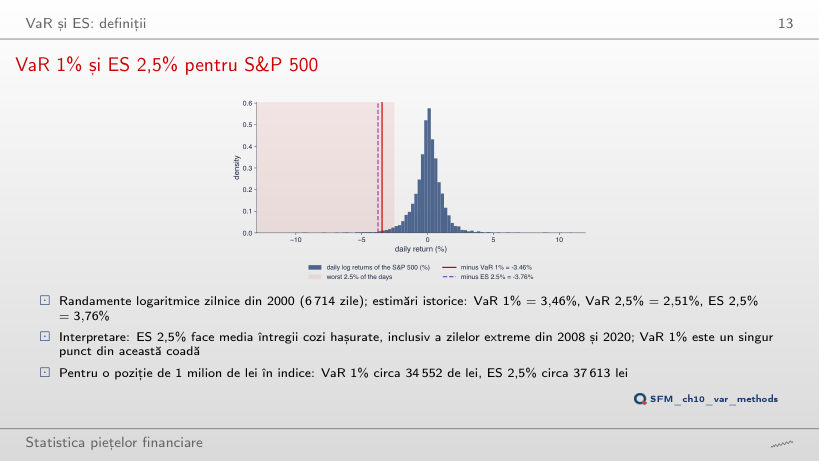
Răspuns
3,76%: media celor mai proaste 168 de zile, cu semn schimbat. VaR 2,5% = 2,51% este doar marginea acestei cozi, iar ES 2,5% face media întregii cozi, inclusiv a zilelor din 2008 și 2020. ES 2,5% și VaR 1% sînt apropiate (3,76% față de 3,46%), de aceea FRTB a putut înlocui VaR 1% cu ES 2,5% fără să schimbe mult nivelul capitalului (BCBS (2019); BCBS (2023b)).
Exemplu rezolvat: VaR și ES Normale pentru S&P 500
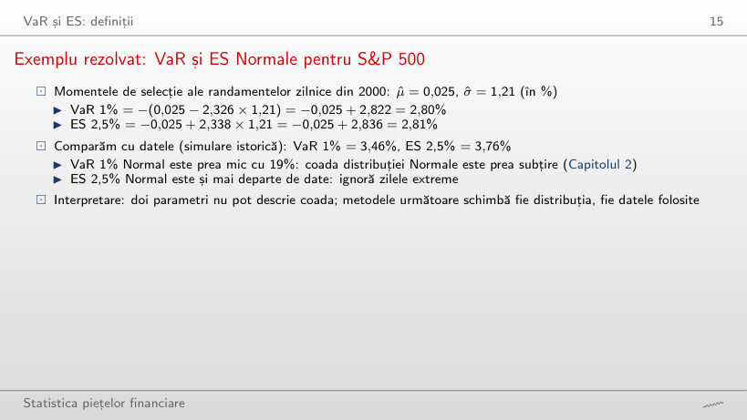
Exemplu lucrat: VaR și ES Normale
Răspuns
Rămîne sub cel istoric peste tot, cu 14–24%: 22% la DAX, 23% la BET, 24% la Bitcoin, 22% la TLV, 14% la SNP (S&P 500: 19%). Doi parametri, media și abaterea standard, nu pot descrie o coadă groasă: distribuția Normală pune prea puțină probabilitate dincolo de 2,3 abateri standard.
De la o zi la zece zile
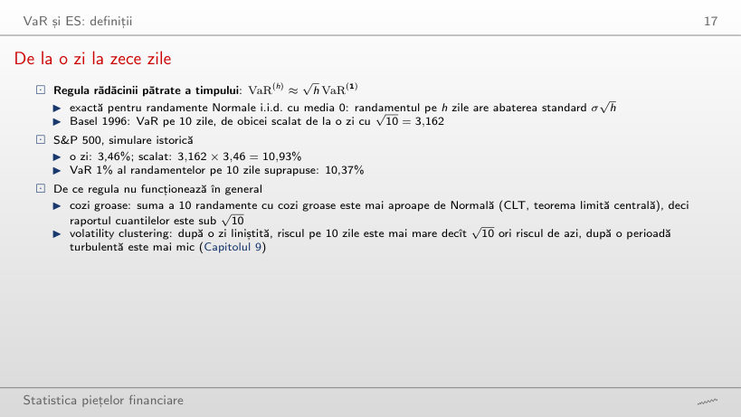
Răspuns
Sub: 10,37%, adică de 3,00 ori VaR-ul pe o zi, față de √10 = 3,16. Suma a 10 randamente cu cozi groase este mai aproape de distribuția Normală (CLT), iar autocorelația de ordinul 1 a randamentelor S&P 500 este −0,10, deci zilele succesive se compensează parțial. La BET raportul este 3,86, peste √10: autocorelația lui este +0,11.
Estimarea VaR și ES
Simularea istorică
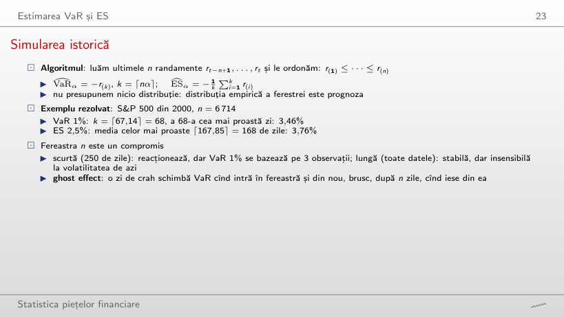
Exemplu lucrat: VaR și ES istorice
Răspuns
Pe a treia: k = ⌈250 × 0,01⌉ = ⌈2,5⌉ = 3. Cu 250 de zile, VaR 1% depinde de 3 observații, iar ES 2,5% de 7 (⌈6,25⌉); pe tot eșantionul de 6 714 zile, VaR 1% este a 68-a cea mai proastă zi.
Precizia unui VaR istoric
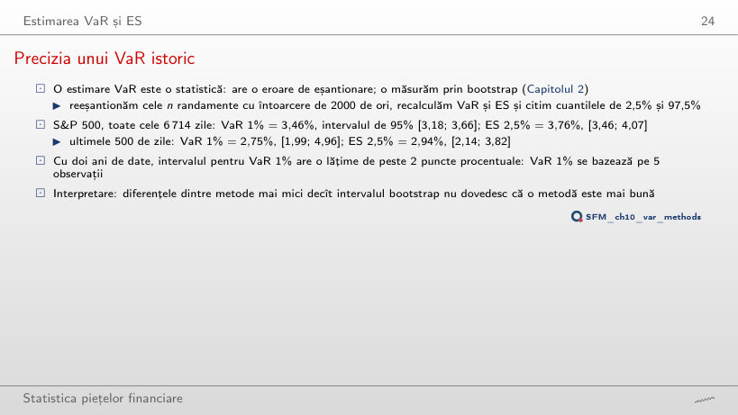
Răspuns
De circa 6 ori: [1,99; 4,96], adică 2,97 puncte procentuale, față de [3,18; 3,66], adică 0,48. Regula √n ar da √(6 714/500) = 3,7; intervalul este mai lat, pentru că VaR 1% se sprijină pe a 5-a cea mai proastă zi, iar între cele cinci zile proaste ale ferestrei sînt salturi mari. Pe ultimele 250 de zile intervalul are doar 1,12 puncte: o fereastră fără zile extreme pare precisă, deși are mai puține observații.
Dezvoltarea Cornish–Fisher
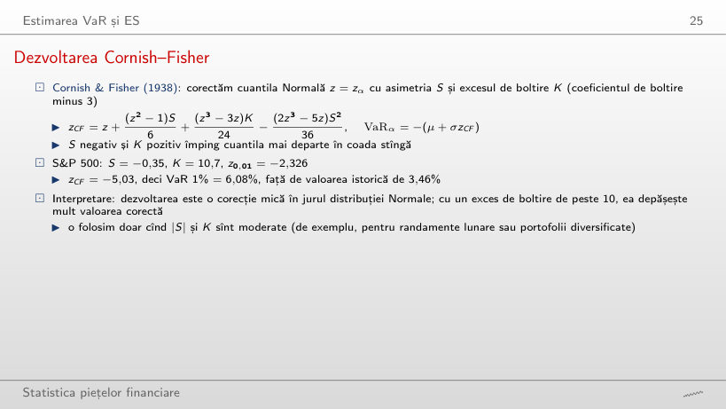
Exemplu lucrat: cuantila Cornish–Fisher
Răspuns
Este aproape dublu: 6,08%. Termenul de boltire (z³ − 3z)K/24 = −2,49 adaugă singur mai mult decît distanța dintre cuantila Normală și cea empirică; dezvoltarea este o corecție mică în jurul distribuției Normale și nu mai este valabilă cînd K trece de 10.
EVT: peaks over threshold (Capitolul 5)
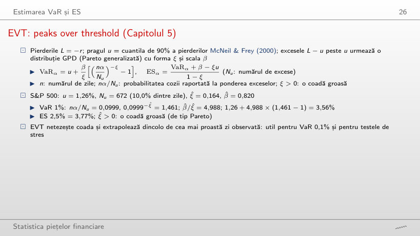
Exemplu lucrat: VaR și ES din GPD
Răspuns
Se schimbă puțin: 3,56% la 90%, 3,54% la 95%, 3,50% la 97,5% (3,59% la 85%). ξ̂ crește de la 0,16 la 0,23, dar la 1% suntem încă aproape de datele folosite; diferența apare la 0,1%, unde VaR EVT trece de la 6,91% la 7,13%.
VaR pentru diferite probabilități ale cozii
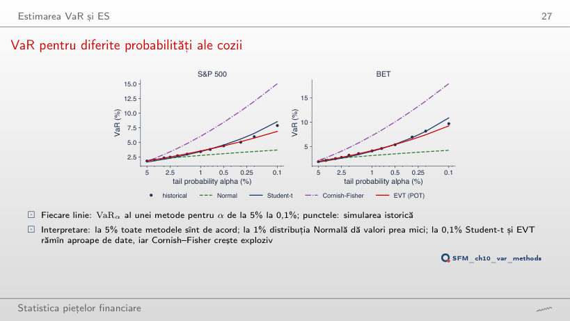
Răspuns
Cornish–Fisher: 15,06%, aproape dublu față de valoarea istorică de 7,90%. Student-t dă 8,58%, EVT 6,91%, distribuția Normală doar 3,72%. La α = 5% toate metodele sînt între 1,67% și 1,97%.
VaR 1% pe metode, pentru șase serii
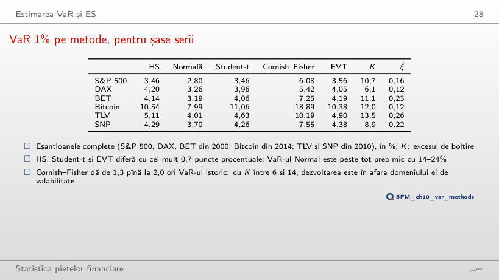
VaR pe metode, eșantioanele complete, în % (K: excesul de boltire)
Răspuns
Nu: la 5% VaR-ul Normal este peste cel istoric pentru toate cele șase serii, cu 3–16% (S&P 500: 1,97% față de 1,85%). O distribuție cu cozi groase și aceeași varianță are mai multă probabilitate în centru și în coada extremă și mai puțină pe „umeri”: cuantila ei de 5% este mai aproape de 0 decît cea Normală.
ES 2,5% pe metode, pentru șase serii
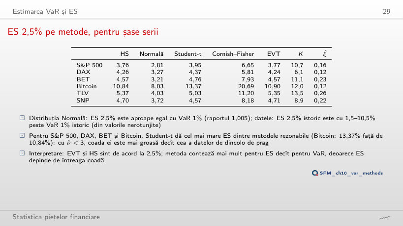
ES pe metode, eșantioanele complete, în %
Răspuns
Cu 1,5–10,5%, după serie (DAX 1,5%, BET 10,5%, din valorile nerotunjite). ES 2,5% istoric face media unei cozi mai lungi decît prevede distribuția Normală, deci raportul trece de 1,005.
VaR condiționat: GARCH și simularea istorică filtrată
Exemplu rezolvat: S&P 500 la 18 septembrie 2026
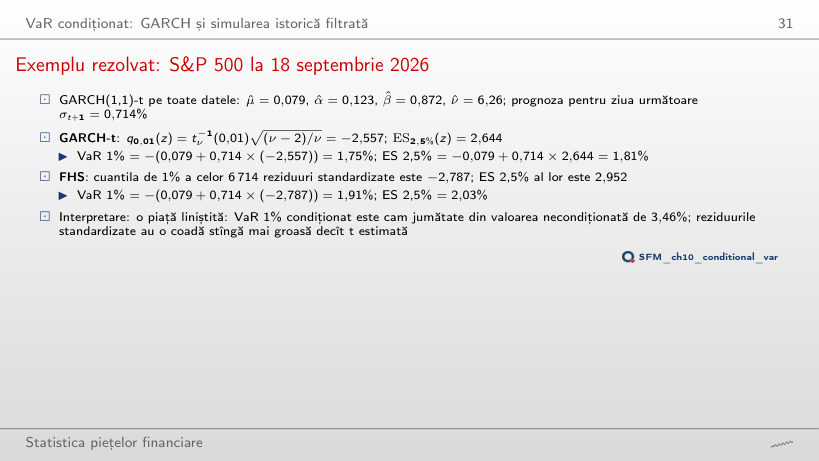
Exemplu lucrat: VaR și ES condiționate
Răspuns
Este cam jumătate: 1,75%. σ(t + 1) = 0,714% este mult sub abaterea standard de selecție de 1,21%: piața este liniștită. FHS dă 1,91%, pentru că reziduurile standardizate au cuantila de 1% −2,787, mai jos decît −2,557 pentru Student-t estimată.
VaR și ES pentru ziua următoare, pe șase serii
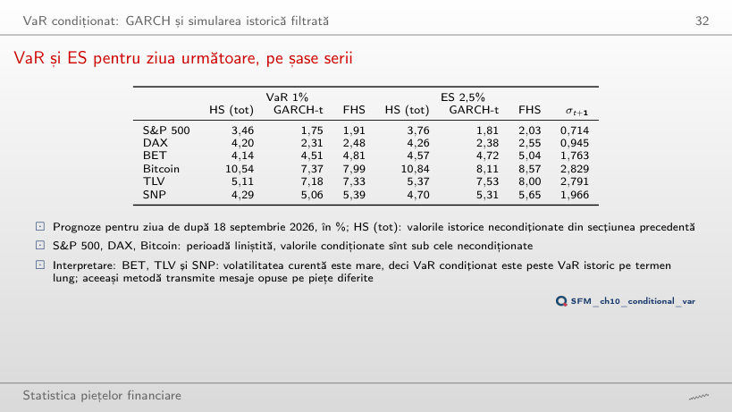
Prognoze pentru ziua de după 18 septembrie 2026, în %
Răspuns
BET (4,51% față de 4,14%), TLV (7,18% față de 5,11%) și SNP (5,06% față de 4,29%): pe acestea volatilitatea curentă este mare. Pe S&P 500, DAX și Bitcoin perioada este liniștită.
VaR 1% în 2008 și în 2020
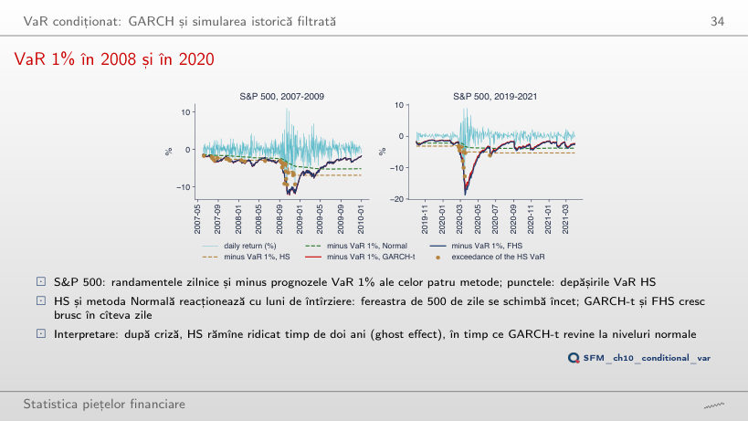
Răspuns
Metoda Normală: 44, față de 27 pentru HS și 15 pentru GARCH-t și FHS. Fereastra de 500 de zile se schimbă încet, iar distribuția Normală are coada prea subțire; după criză, HS rămîne ridicat doi ani (ghost effect).
Perioade de stres: depășiri în 2008 și 2020
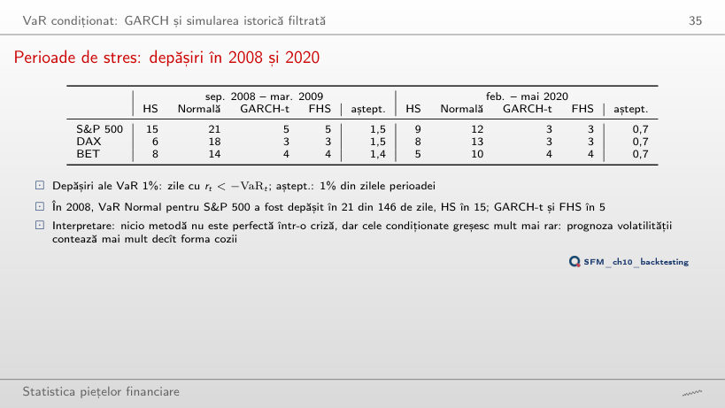
Depășiri ale VaR: zile cu r(t) < −VaR(t)
Răspuns
De 21 de ori, față de 1,46 așteptate; HS de 15 ori, GARCH-t și FHS de cîte 5 ori. Prognoza volatilității contează mai mult decît forma cozii.
VaR de portofoliu și dependența
Metoda varianță–covarianță
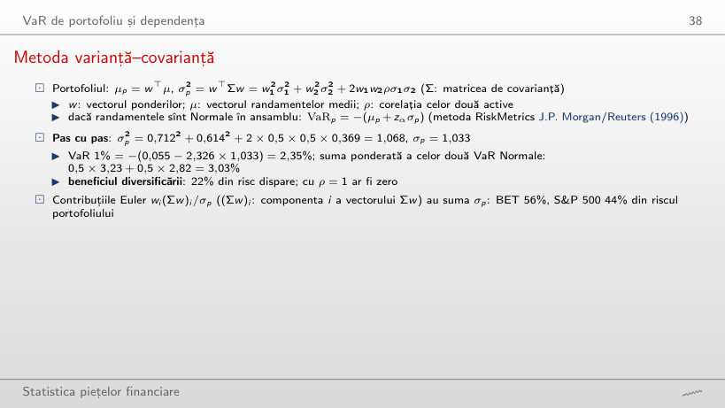
Exemplu lucrat: VaR-ul portofoliului 50/50
Răspuns
3,03%: suma ponderată a celor două VaR Normale, 0,5 × 3,23 + 0,5 × 2,82; beneficiul diversificării, 22% cu ρ = 0,21, dispare. Cu ρ = 0,71 (primăvara lui 2020) VaR-ul este 2,80% și beneficiul doar 8%.
Corelația crește în crize
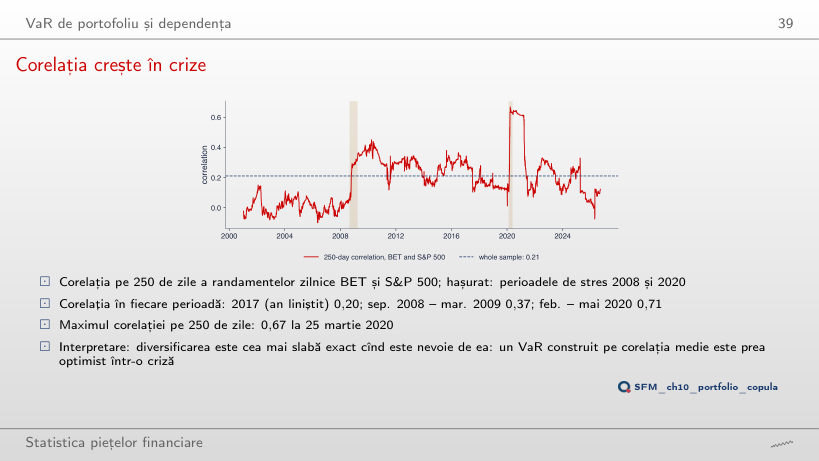
Răspuns
Pe 25 martie 2020, 0,67. Corelația din fiecare perioadă: 0,20 în 2017, 0,37 din septembrie 2008 pînă în martie 2009, 0,71 din februarie pînă în mai 2020. BVB tranzacționează pînă la 17:45, ora României, iar New York se deschide la 16:30, deci o parte din mișcarea de la New York ajunge la București abia a doua zi.
Corelația nu este dependență în cozi
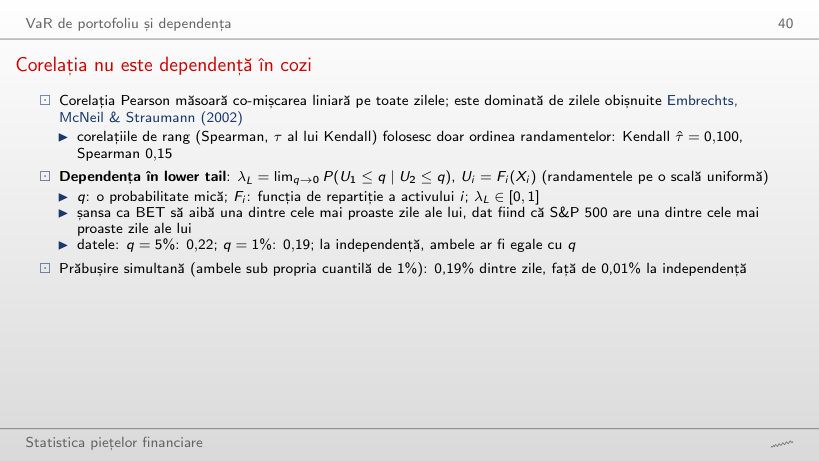
Răspuns
0,19, de 19 ori mai mult decît la independență (0,01). La q = 5% probabilitatea este 0,22. Corelația Pearson de 0,21 este dominată de zilele obișnuite și nu spune nimic despre cît de des cad cei doi indici împreună.
Copula Gaussiană și copula t
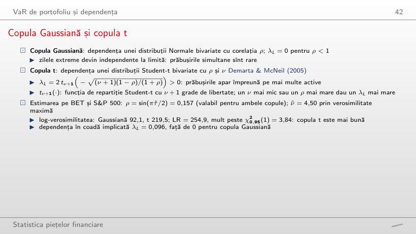
Exemplu lucrat: dependența în coada stîngă a copulei t
Răspuns
Scade spre 0: 0,096 la ν = 4,5, 0,016 la ν = 10 și practic 0 la ν = 40. Cînd ν → ∞, copula t devine copula Gaussiană, care are λ_L = 0.
Zile proaste comune: datele și două copule
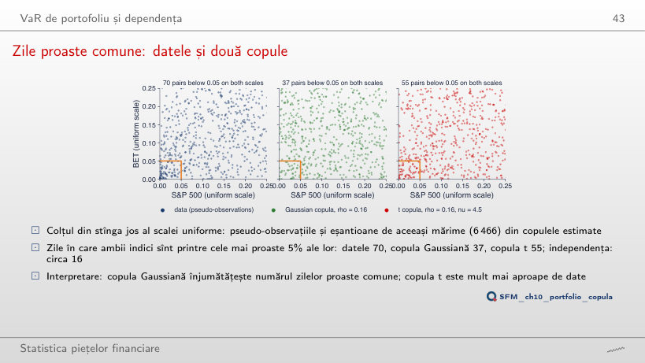
Răspuns
În 70 de zile, față de circa 16 (6 466 × 0,05²) la independență. Copula Gaussiană estimată dă 37, copula t 55: doar copula t reproduce o parte din prăbușirile simultane.
VaR 1% și ES 2,5% ale portofoliului, pe metode
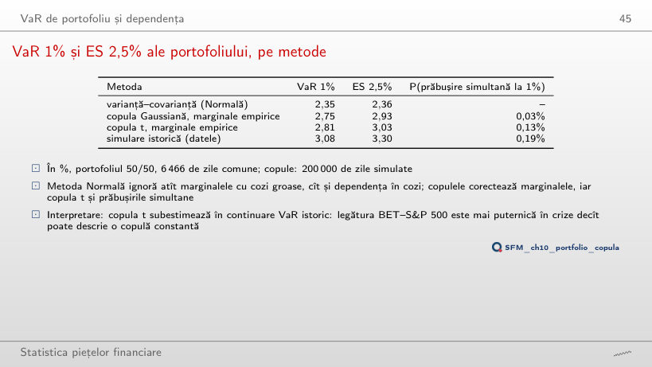
VaR 1% și ES 2,5% ale portofoliului, în %
Răspuns
Simularea istorică: 3,08%. Copula t dă 2,81%, copula Gaussiană 2,75%, metoda varianță–covarianță 2,35%. Copula t rămîne sub datele istorice: legătura dintre cei doi indici este mai puternică în crize decît poate descrie o copulă constantă.
Backtesting
Depășiri în 250 de zile pentru un VaR 1% corect
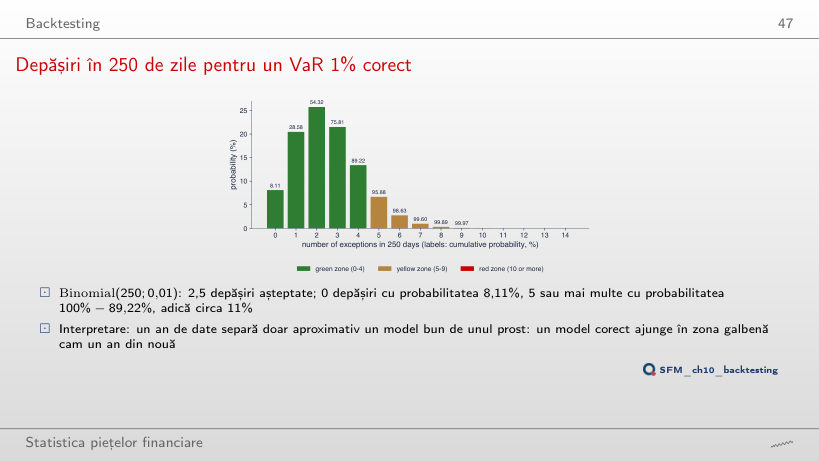
Răspuns
Circa 44% (P(X ≤ 4) = 43,9% pentru Binomial(250; 0,02)). Un an de date separă doar aproximativ un model bun de unul prost; un model corect ajunge în zona galbenă cu probabilitatea 10,8% (BCBS (1996b)).
Testul POF al lui Kupiec
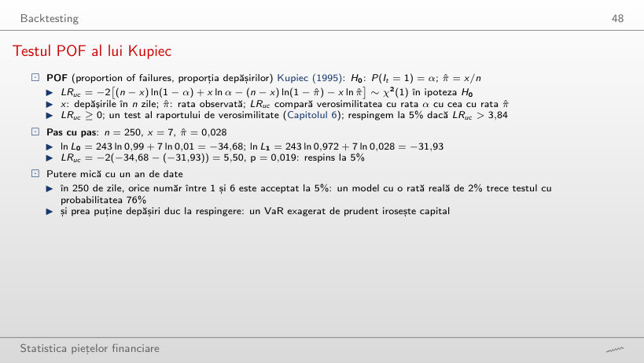
Exemplu lucrat: testul POF
Răspuns
Da: ln L₀ = 250 ln 0,99 = −2,51, ln L₁ = 0, LR_uc = 5,03 > 3,84. Prea puține depășiri indică un VaR prea prudent, care irosește capital. Cu 250 de zile, testul nu respinge doar numerele de depășiri de la 1 la 6.
Testul Kupiec pe 21 de ani de prognoze pentru S&P 500
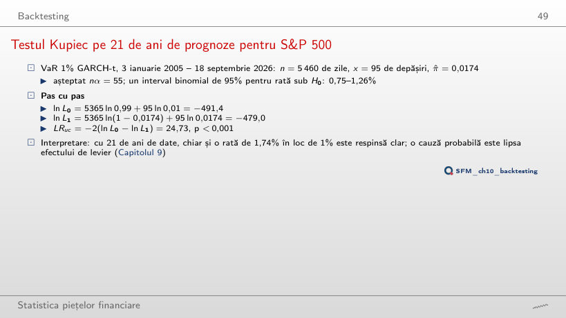
Exemplu lucrat: testul Kupiec pe prognozele din curs
Răspuns
Niciuna: HS are rata 1,41% (p = 0,004), FHS 1,58%, metoda Normală 2,71% (ambele p < 0,001). Cu 5 460 de zile, testul are o putere mare și respinge chiar rate de 1,4%.
Testul de independență al lui Christoffersen
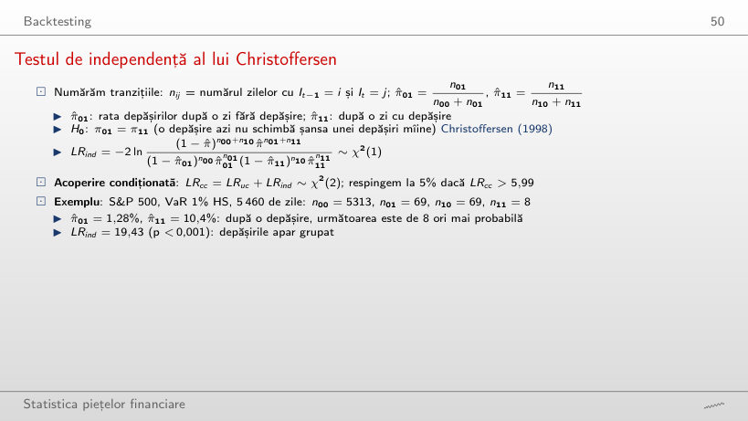
Exemplu lucrat: independența și acoperirea condiționată
Răspuns
HS (p < 0,001; π̂₁₁ = 10,4% față de π̂₀₁ = 1,28%) și metoda Normală (p < 0,001). GARCH-t (p = 0,114) și FHS (p = 0,060) nu sînt respinse: prognoza volatilității desface grupurile de depășiri. Testul privește doar zilele consecutive.
Semaforul Basel
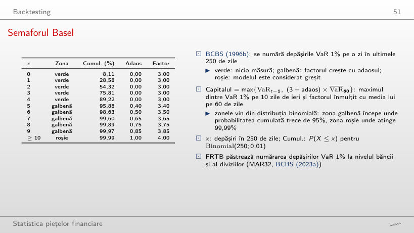
Semaforul Basel: Binomial(250; 0,01) (BCBS (1996b))
Exemplu lucrat: zona din numărul depășirilor
Exemplu lucrat: cerința de capital (BCBS (1996a))
Răspuns
3,50: P(X ≤ 6) = 98,63% este între 95% și 99,99%, deci zona galbenă, cu adaosul 0,50 (BCBS (1996b)). Capitalul este max{VaR(t − 1), 3,50 × media pe 60 de zile} (BCBS (1996a)); FRTB calculează capitalul din ES 2,5% (BCBS (2023b)), dar backtesting-ul numără tot depășirile VaR 1% (BCBS (2023a)).
Depășirile în timp
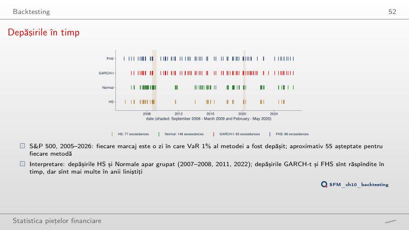
Răspuns
HS: 77, față de 86 pentru FHS, 95 pentru GARCH-t și 148 pentru metoda Normală; așteptate circa 55. HS are cele mai puține depășiri, dar ele apar grupat în crize, în timp ce depășirile GARCH-t și FHS sînt răspîndite și mai multe în anii liniștiți.
Rezultatele backtesting-ului: S&P 500 și DAX
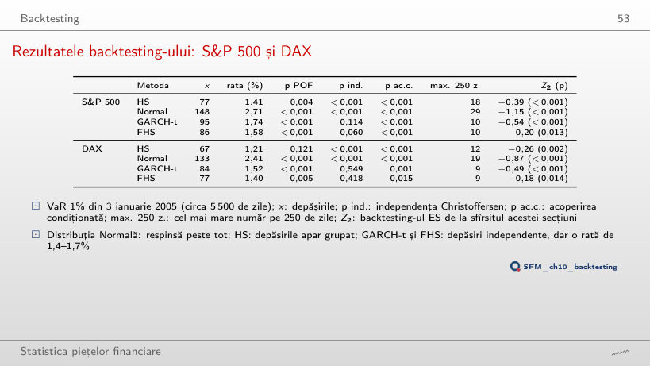
Backtesting-ul VaR 1% (p ind.: independența Christoffersen; p ac.c.: acoperirea condiționată)
Răspuns
Nu: din 2015 rata ei este 2,72% pe S&P 500 și 2,52% pe DAX, ambele cu p < 0,001. Fără 2008 rata scade puțin, dar coada Normală rămîne prea subțire.
Rezultatele backtesting-ului: BET și Bitcoin
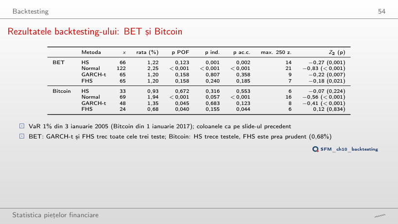
Backtesting-ul VaR 1%, coloanele ca în tabelul precedent
Răspuns
GARCH-t (p 0,158; 0,807; 0,358) și FHS (p 0,158; 0,240; 0,185). HS trece POF (p = 0,123), dar depășirile ei apar grupat (p ind. 0,001).
Ordonarea prognozelor și zona de azi
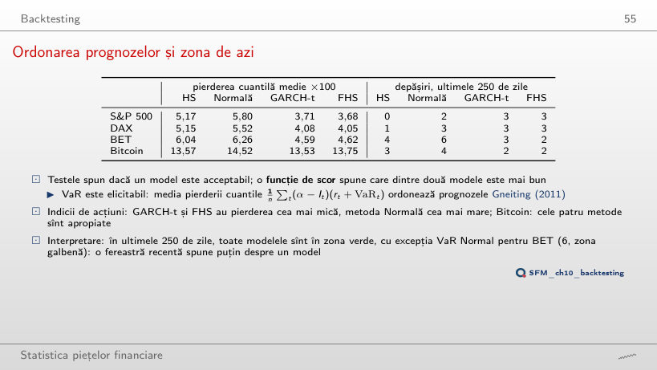
Pierderea cuantilă medie × 100 (cu verde: cea mai mică) și depășirile din ultimele 250 de zile
Răspuns
GARCH-t, la limită: 13,53 față de 13,57 pentru HS, 13,75 pentru FHS și 14,52 pentru metoda Normală. Pe indicii de acțiuni diferențele sînt mari (S&P 500: 3,68 pentru FHS, 5,80 pentru metoda Normală); pe Bitcoin cele patru metode sînt apropiate.
Semaforul Basel în timp
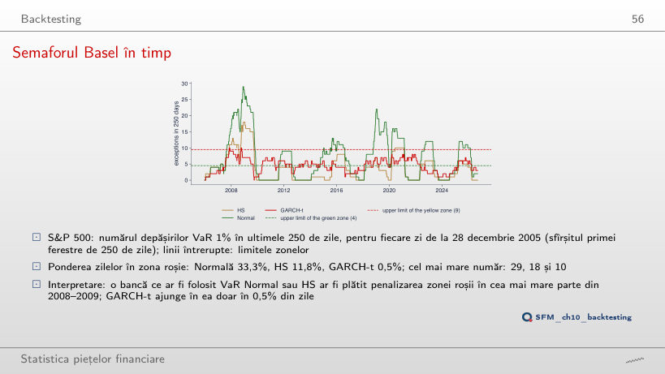
Răspuns
O treime (33,3%); HS 11,8%, GARCH-t 0,5%. Cel mai mare număr de depășiri în 250 de zile: 29 pentru metoda Normală, 18 pentru HS, 10 pentru GARCH-t. O bancă cu VaR Normal ar fi plătit penalizarea zonei roșii (BCBS (1996b)) în cea mai mare parte din 2008–2009.
Backtesting pentru ES: Acerbi și Székely
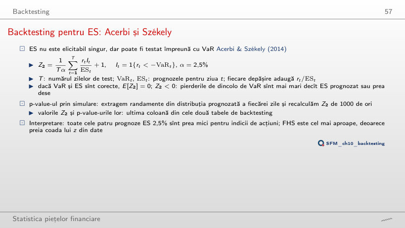
Exemplu lucrat: statistica Z₂
Răspuns
Negativ pentru toate cele patru metode: HS −0,39, Normal −1,15, GARCH-t −0,54, FHS −0,20 (p 0,013 pentru FHS, sub 0,001 pentru celelalte). Pierderile de dincolo de VaR sînt mai mari sau mai dese decît prognozează ES; FHS este cel mai aproape de 0, pentru că preia coada lui z din date.
Randamente logaritmice zilnice, în %: S&P 500, DAX și BET din ianuarie 2000, Bitcoin din septembrie 2014 (7 zile pe săptămînă), Banca Transilvania (TLV) și OMV Petrom (SNP) din 2010, din prețul ajustat, pînă la 18 septembrie 2026; cele două zile greșite ale TLV din mai 2016 sînt eliminate. Portofoliul: randamente simple ale BET și S&P 500 pe cele 6 466 de zile comune. Prețuri EODHD. Browserul calculează din randamente VaR și ES istorice, Normale, Cornish–Fisher și EVT, prognozele HS și Normale pe 500 de zile, corelațiile, pseudo-observațiile și dependența în cozi; parametrii Student-t, GPD și GARCH(1,1)-t sînt cei estimați de codul din curs. Prognozele GARCH-t și FHS pe fereastră mobilă (reestimate la fiecare 250 de zile) sînt reconstruite din volatilitatea condiționată și din parametrii fiecărei reestimări; depășirile, testele Kupiec și Christoffersen, semaforul Basel, pierderea cuantilă și Z₂ sînt recalculate în browser. Valorile p ale lui Z₂ (1000 de simulări), bootstrap-ul (2000 de reeșantionări) și simulările copulelor (200 000 de extrageri) vin din codul din curs. Alte praguri EVT, alte ferestre, alte niveluri, alte ponderi ale portofoliului, alte semințe, alte începuturi ale evaluării și cerința de capital Basel calculată din prognoze sînt rulări suplimentare ale aceluiași cod.